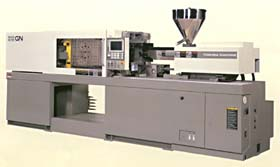
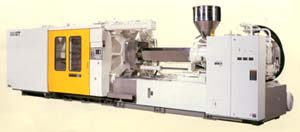

対応範囲
金型屋に頼めるかどうかは、だいたいこの2つの数字で決まります。
型重量
7ton
ぐらいまで
成形機サイズ
1300ton
クラスまで
- 自動車部品
- 弱電部品
- 雑貨
上記のプラスチック射出成形金型を承っています。
成形トライ
金型を作った会社が、そのまま成形して確認できます。 問題が出たときに、原因が金型なのか成形条件なのかを切り分けやすくなります。
| 型式 | 型締力 | プラテン | メーカー |
|---|---|---|---|
| IS100 GN | 100t | 410 × 410 | 東芝 |
| IS220 GN | 220t | 560 × 560 | 東芝 |
| IS450 GS | 450t | 810 × 810 | 東芝 |


設備（加工機）
荒取りから仕上げ、磨きまで社内で通せる構成です。
| 区分 | 型式 | 加工範囲 | メーカー | 台数 |
|---|---|---|---|---|
| マシニングセンター （高速） |
NV5000 | 800 × 510 | 森精機 | 1 |
| GF-8 | 1200 × 800 | 牧野フライス | 1 | |
| V55 | 900 × 500 | 牧野フライス | 1 | |
| V33 | 600 × 400 | 牧野フライス | 1 | |
| マシニングセンター | FDNC-128 0MC | 1200 × 800 | 牧野フライス | 1 |
| FDNC-106 0MB | 1050 × 600 | 牧野フライス | 1 | |
| EM-3 0MC | 500 × 400 | 浜井産業 | 1 | |
| NCフライス | FNC-106 11M | 1050 × 600 | 牧野フライス | 1 |
| AV-74 11M | 700 × 400 | 牧野フライス | 1 | |
| AVNC-74C2 0M | 700 × 400 | 牧野フライス | 1 | |
| グラファイトNC 放電加工機 |
EX30 | 700 × 500 | 三菱電機 | 1 |
| EDNC-85 | 800 × 500 | 牧野フライス | 1 | |
| NC放電加工機 | EPOC-5 | 460 × 390 | ソディック | 1 |
| EX8E（ATC付） | 300 × 250 | 三菱電機 | 1 | |
| EX22（ATC付） | 500 × 400 | 三菱電機 | 1 | |
| EA30E | 700 × 500 | 三菱電機 | 1 | |
| ワイヤーカット加工機 | U53 | 520 × 370 | 牧野フライス | 1 |
| FX-10 | 350 × 250 | 三菱電機 | 1 | |
| TAPE CUT-MATE | 300 × 200 | FANUC | 1 | |
| 金型磨き機 | KM-1550（ATC付） | — | ダイキン工業 | 1 |
| 汎用フライス | ラム型 2.5番 | — | 牧野フライス | 1 |
| ラム型 1.5番 | — | 牧野フライス | 2 | |
| ラム型 2.0番 | — | 関東工機 | 2 | |
| ラム型 1.5番 | — | 関東工機 | 3 | |
| 汎用旋盤 | 4尺 | — | KENETA | 1 |
| 4尺 | — | ワシノ工機 | 1 | |
| 成形研削盤 | — | 150 × 300 | 三井 | 1 |
| 平面研削盤 | — | 400 × 600 | MOTO | 1 |
| — | 150 × 300 | 高橋 | 1 |
CAD / CAM
2Dでも3Dでも受けられます。お手元のデータ形式をご相談ください。
CAD
- ICAD-MX（2D）
- 富士通2台
- Unigraphics（3D）
- UNIGRAPHICS3台
- FF-MODELER
- エービーシステム1台
CAM
- Space-E
- 日立造船—
- WorkNC
- SESCOI2台
- TOOLS
- グラフィックプロダクツ2台
- FF-CAM
- エービーシステム1台
3Dビューア
- SolidView/Lite
- ——
- MCSC
- フリー—
会社概要
- 会社名
- 細内金型株式会社
- 所在地
-
〒321-0120 栃木県宇都宮市羽牛田町176-14
TEL 028-655-4409（代表）／FAX 028-655-4419 - 創立
- 昭和54年2月5日（1979年）
- 資本金
- 1,200万円
- 代表役員
- 代表取締役 細内 嘉博
- 従業員数
-
32名
男子30名／女子1名／パート1名 - 敷地・建物
-
敷地面積 2,319.48㎡
建物 1,144.6㎡ - 事業内容
- プラスチック金型設計製作
よくあるご質問
どのくらいの大きさの金型まで作れますか？
型重量7tonぐらいまで、成形機サイズ1300tonクラスまでの プラスチック射出成形金型を製作しています。自動車部品、弱電部品、 雑貨などの実績があります。
成形トライまでお願いできますか？
できます。自社に東芝製の射出成形機を3台（IS100GN・100t／ IS220GN・220t／IS450GS・450t）保有しており、 金型を作った同じ会社でトライまで通せます。
3Dデータに対応していますか？
対応しています。CADはICAD-MX（2D）2台、Unigraphics（3D）3台、 FF-MODELER 1台。CAMはSpace-E、WorkNC 2台、TOOLS 2台、 FF-CAM を運用しています。
見積りはどうやって依頼すればよいですか？
電話、FAX、Eメールでご依頼ください。データ添付メールは hkk@hosouchi.co.jp 宛で、1通20MBまで、総容量70MBまでです。 20MBを超えるデータは分けて送信してください。
どんな加工機を持っていますか？
高速マシニングセンター4台（森精機NV5000、牧野フライスGF-8・V55・V33）、 マシニングセンター3台、NCフライス3台、グラファイトNC放電加工機2台、 NC放電加工機4台、ワイヤーカット加工機3台、金型磨き機、汎用フライス8台、 汎用旋盤2台、成形研削盤・平面研削盤3台を保有しています。
見積りのご依頼
製作・見積りのご依頼や各種お問い合わせは、電話・FAX・Eメールにて お願いいたします。
図面データを送る場合
hkk@hosouchi.co.jp 宛にお送りください。
1通あたり20MBまで、総容量70MBまで。
20MBを超える場合は分割してご送信ください。
FAX 028-655-4419